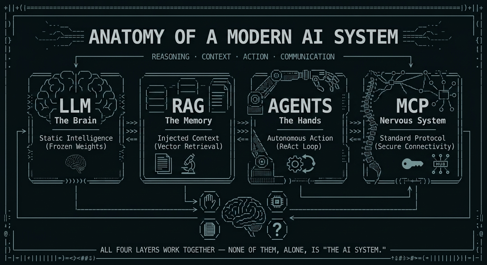
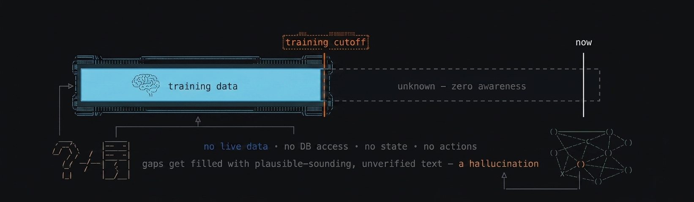
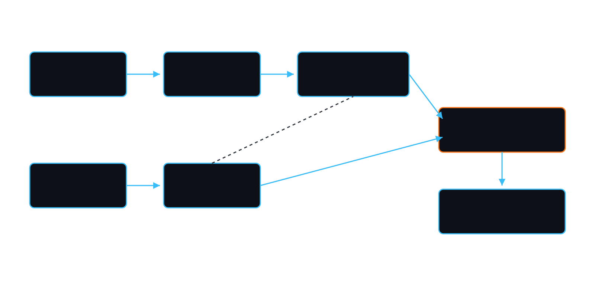
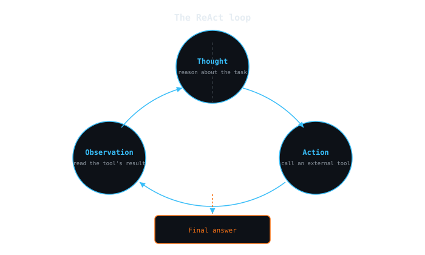
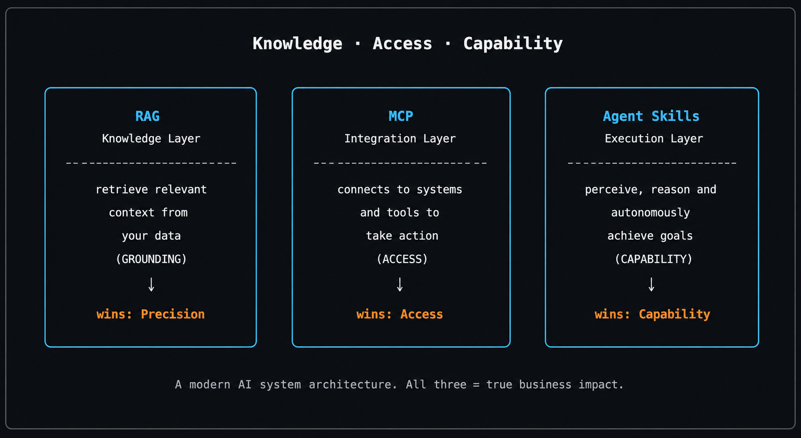

If you spend time on tech LinkedIn or X, you have likely seen a set of content reducing Artificial Intelligence to "vibe coding" or writing clever prompts. However, as software engineers, systems architects or Tech Leads, we know that sending a string to a black-box API is not how you should build scalable, production-ready enterprise applications.
A standalone LLM (Large Language Model) can’t sort out complex enterprise problems. It doesn't have access to our live databases, it doesn't know our business logic. It has no state persistence and it can’t execute actions.
To deliver real value, we need to look beyond the foundational model and focus on the system architecture that surrounds it. To make sense of this rapidly evolving ecosystem, it’s good to map a complete, enterprise-grade AI system to a human analogy: an intelligent core (the Brain), a contextual memory layer (Books), an execution loop (Hands), and a standardised communication framework (the Nervous System).
Let's break down the anatomy of a modern AI system, focusing on the low-level mechanics and engineering trade-offs involved in each component.

1. The LLM (The Brain) — Static Intelligence
In any modern AI system, the LLM acts as "The Brain", in other words, the core intelligence layer that is responsible for reasoning and text generation, trained on massive historical datasets.
However, to architect systems around it, t is essential that we understand what this "brain" is under the hood.
The low-level reality
An LLM doesn’t "think," nor its neural network contain a database of facts inside, because at its core, an LLM is a massive, frozen file of mathematical weights. When you submit some prompts to a model, you are passing data through a complex mathematical function that calculates a probability distribution to predict the next most likely word token.
From a systems engineering, you should think a raw LLM like a read-only, massive, cache that was completely frozen on the day training was completed.
The architectural limitations
The model is a static snapshot of past data, so it introduces two distinct architectural challenges:
- No live data — if a model's training data cut off six months ago, it is not aware of anything that happened yesterday.
- Hallucinations — when an LLM has a gap in its knowledge, it does not return a 404 Not Found because its fmain role is to predict the next logical token, it will mathematically generate text that sounds perfectly plausible but is simply wrong. It optimizes for linguistic coherence rather then factual accuracy.

2. RAG (Brain + Memory) — Injected Context
In order to solve the limitations of static intelligence without spending millions of dollars re-training or fine-tuning a model, we use Retrieval-Augmented Generation (RAG). If we think of an LLM as a brilliant student taking an exam, RAG is the act of handing that brain an open textbook containing the exact information it needs right before it answers.
The low-level reality
RAG adds a data ingestion and retrieval pipeline to your architecture. Instead of depending on the LLM to know the answer, your application first gets the relevant information from your private data sources. It then sends both that context and the user’s query to the LLM.
As an engineer, you need to understand how it works under the hood:
- Embeddings — Unstructured enterprise data, such as PDFs, documents or database records, is split into smaller chunks and then processed by embedding models; these models convert each chunk into a high-dimensional vector (a string of numbers) to represent its meaning.
- Vector databases — Vectors are persisted in databases that are focused on performanceand efficiency (e.g., Pinecone, Chroma).
- Semantic search — Query vectorization is done through a vector database, and your system performs a Similarity search (e.g. using the Cosine Distance) in the Vector Databsae to determine the data that is closest in meaning to what the user is asking.

3. AI Agents (Brain + Hands) — Autonomous Action
While RAG makes the system factually accurate, it is still passive because it only answers static inputs. If you want to build truly disruptive applications, the system needs to have the ability to execute tasks. With that, we introduce AI Agents, which represent the "Hands" of the system.
The low-level reality
AI Agents take things a step further, moving beyond simply answering questions to actually carrying out tasks on their own. It achieves this by utilising a design pattern known as the ReAct (Reasoning and Acting) loop.
Rather than giving an answer straight away, the LLM is prompted to output its "Thought," define an "Action" (calling an external tool), and wait for the "Observation" (the result of that tool).

The engineering trade-offs
While agents are very incredible and powerful whey introduce massive challenges that Tech Leads must carefully architect for:
- Latency — a single user request can trigger 4 or 5 internal reasoning loops. If every LLM API call takes 1.5 seconds, the user could end up waiting 10 seconds for a response.
- Compounding token costs — you need to pass the entire conversation history, thoughts, and tool outputs back to the LLM on every single turn of the loop and that makes token consumption grow quickly.
4. MCP (The Nervous System) — The Standardized Communication Protocol
If the LLM is the brain, RAG is the memory, and Agents are the hands, how do we securely connect them to the enterprise infrastructure? This has long been a challenge for the industry, and it is where the concept of the Model Context Protocol (MCP) is introduced as the "Nervous System."
The low-level reality
Originally open-sourced by Anthropic, MCP is an open, standardised architectural protocol built on top of JSON-RPC 2.0, and it establishes a secure client-server relationship between LLM applications and data sources.
We can think of MCP exactly as a SysAdmin views REST or POSIX standards. Before MCP, if you wanted an AI agent to access a database, check a GitHub repository, or parse local logs, you had to write a custom, fragile API connector for each specific use case.

The Architectural Matrix: Knowledge vs. Access vs. Capability
When designing enterprise AI systems, you’ll often hear RAG, MCP, and Agent Skills discussed together. But as architects, we must avoid using them as interchangeable buzzwords because they solve fundamentally different engineering problems. Understanding where each belongs in your stack is critical.
To design an agent that goes beyond a basic chat interface and actually executes enterprise workflows, you need to map them to these three distinct layers:
- RAG (The Knowledge Layer) — gives the agent knowledge. It solves the problem of finding the right context and grounding responses in trusted data, helping to reduce hallucinations.
- MCP (The Integration Layer) — gives the agent access. It resolves the connectivity problem by replacing fragile, custom-built API integrations with a secure and standardised protocol.
- Agent Skills (The Execution Layer) — gives the agent capability. It is the runtime configuration: the prompts, specific tools, and structured workflows that an agent needs to carry out repeatable, reliable actions.
| Layer | Component | Core function | What it gives the agent |
|---|---|---|---|
| Knowledge | RAG | Retrieves relevant context before answering | Knowledge |
| Integration | MCP | Connects to systems via a standard protocol | Access |
| Execution | Agent Skills | Performs structured, repeatable workflows | Capability |

The real architectural value comes from understanding how they work together. A robust, production-ready system orchestrates all three: RAG finds the correct information, MCP connects the agent to the right systems, and Skills handle the right actions.
Conclusion: Engineering the Future of AI
Building enterprise-grade AI is not just about writing a perfect and/or lucky prompt. It is all about systems engineering, and we need to understand and work within the LLM’s inherent limitations, design the most efficient possible retrieval pipelines with RAG, manage the latency that can be introduced by the Agents, and establish consistent communication through protocols like MCP.
Once we have the architecture under our control, the next challenge is making sure that our development workflows can scale. How do we ensure that agents consistently produce what we need without spinning into chaotic code generation?